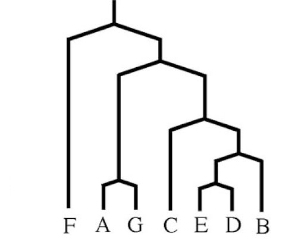
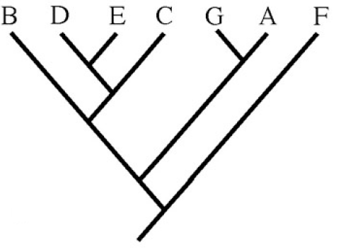
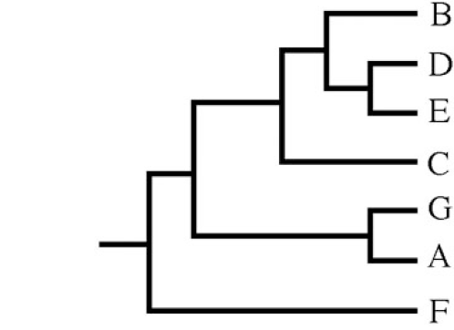
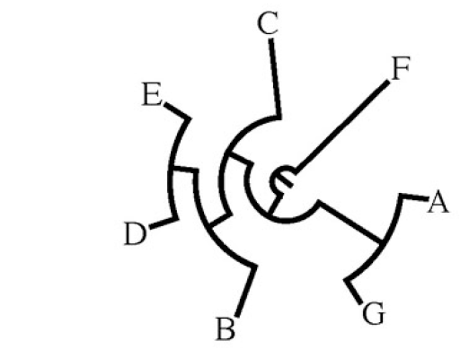

Instructions for individual readiness assessment test (iRAT)
Put your name, the module (demo) and today’s date (02/17/2019) on the test.
Answer each question four times (i.e., as though there were four separate questions). Each question is worth a maximum of four points and you will receive one point for each correct answer. For example, if you are confident with your answer for a question, you should answer the same letter for each of the four numbers. If you are correct, you will receive the maximum of four points. If you are debating between two answers and cannot decide which is correct, you can answer twice one of the letters and twice the other or any combination of answers in the four numbers assigned to the question. Each question states which four answers belong to it (e.g. iRAT 9-12).
When you are finished (or the time is up), return the test.
Instructions for the team readiness assessment test (tRAT)
When the time is up, have one member of your team turn in the envelopes to the instructor and collect the IF-AT sheet for your team.
Complete the test with your team using the IF-AT sheet.
Tally your team’s tRAT with the following scoring guide: 4 points for one scratch, 2 points for 2 scratches, 1 point for 3 scratches and zero if you have to scratch four or more to reveal the correct answer.
Review appeals form and complete if appropriate. Return the IF-AT when the time is up.
Questions
Choose the best answer among the alternatives. Remember that RATs are closed book.
iRAT 1 / tRAT 13: Which of the following is the activity sequence typical of a TBL module?
- A: Individual Study, Individual Test, Team Test, Instructors’ presentation, Appeals, Applications
- B: Individual Study, Instructor’s presentation, Individual Test, Team Test, Appeals, Applications
- C: Individual Study, Individual Test, Team Test, Appeals, Instructor’s presentation, Applications
- D: Individual Study, Individual Test, Appeals, Team Test, Instructor’s presentation, Applications
- E: Instructor’s presentation, Individual Study, Individual Test, Appeals, Team Test, Applications
iRAT 5 / tRAT 14: What is the solution to \(x^2 + 3\cdot x = 10\)
A: \(x=-2\), B: \(x=\alpha\), C: \(x=\frac{5}{2}\), D: \(x=2\), E: \(x=0\)
iRAT 9 / tRAT 15: The purpose of the peer evaluation process in a TBL course is to
- A: Hold students accountable to their instructor for their individual preparation
- B: Help the instructor find under-performing students and have a talk with them
- C: Make sure students are fairly rewarded for their contributions to the team
- D: Hold students accountable to their teammates for their individual preparation
- E: Create conditions that can enable students to learn a great deal about the way they interact with others
iRAT 13 / tRAT 16: Which of the following is one of the core concepts of TBL?
- A: Course focus shifts from knowing course material to applying it.
- B: Learning is mostly the responsibility of the professor teaching the course.
- C: Class periods are efficient because more time is spent in class on gaining knowledge of course material.
- D: Less prepared students can still do well in the course if they are on a strong team.
- E: The loudest students in the class perform best because they are most able to convince their teammates of the right answers.
17: What is the primary purpose of the Application Activities?
- A: They enable unprepared teams to kick back and wait for the other teams to provide the answer
- B: To enable the teams to report decisions publicly and defend their own decisions, and examine and critique other teams decisions
- C: To give the teams sufficient time to generate a lengthy written rationale for their decisions that can be easily graded by the instructor
- D: They enable the instructor to get a quick read on individual students preparation, to help identify students at risk
- E: They enable the instructor to get an idea of which teams are struggling with learning the course material
iRAT 21 / tRAT 18: In-class activities are designed to include the 4 S’s, including all except which “S”?
A: Specific choice, B: Significant problem, C: Selective options, D: Simultaneous reporting, E: Same problem
iRAT 25 / tRAT 19: Before each Readiness Assurance Test students are expected to do what?
- A: Solve some “easy” problem with their teammates before coming to class
- B: Complete a homework assignment
- C: None of the other options
- D: Complete preparatory materials
- E: Attend a series of introductory lectures
iRAT 29 / tRAT 20: Which of the following is NOT a main component of helpful feedback
- A: Helpful feedback describes the impact of the behaviors of the person receiving feedback.
- B: Helpful feedback uses behavioral language, which speaks about one’s observations rather than one’s judgments.
- C: Helpful feedback is honest and sincere.
- D: Helpful feedback is specific. It points out something specific the person receiving feedback did.
- E: Helpful feedback uses words that evaluate the work of the person receiving feedback.
iRAT 33 / tRAT 21: The benefits of TBL include all of the following EXCEPT
- A: The professor lectures more than in typical classes, so the students get more exposure to the professor’s words, thoughts, and mannerisms.
- B: More students (one per team) can simultaneously discuss course material rather than one student at a time in an ordinary full-class discussion.
- C: Students advance beyond gaining knowledge to applying it to solve problems.
- D: If a student is struggling, teammates can help the student stay on track.
- E: Students learn how to effectively solve problems as a team.
iRAT 41 / tRAT 23: Which of the four trees below depicts a different pattern of relationships than the others?
A: , B: they are all the same, C: , D: , E: 
iRAT 45 / tRAT 24: The overall goals for this course include all of the following EXCEPT
- A: Honing your critical thinking and problem solving skills
- B: Improving your ability to read, synthesize, and critically evaluate geomicrobiology literature
- C: Collaborating effectively with the members of your team
- D: Learning to become more extroverted and social
- E: Gaining a broad understanding of the role of microbes on our planet